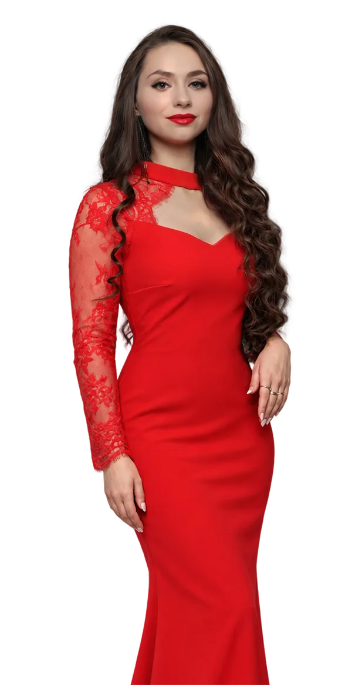
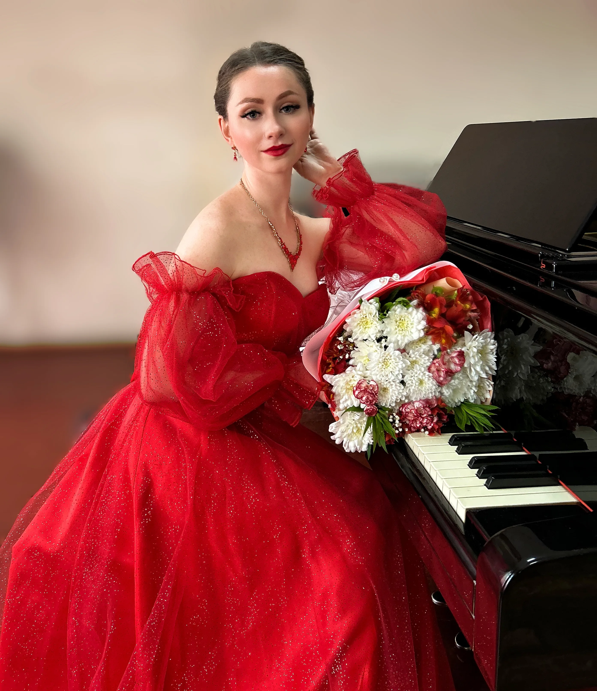
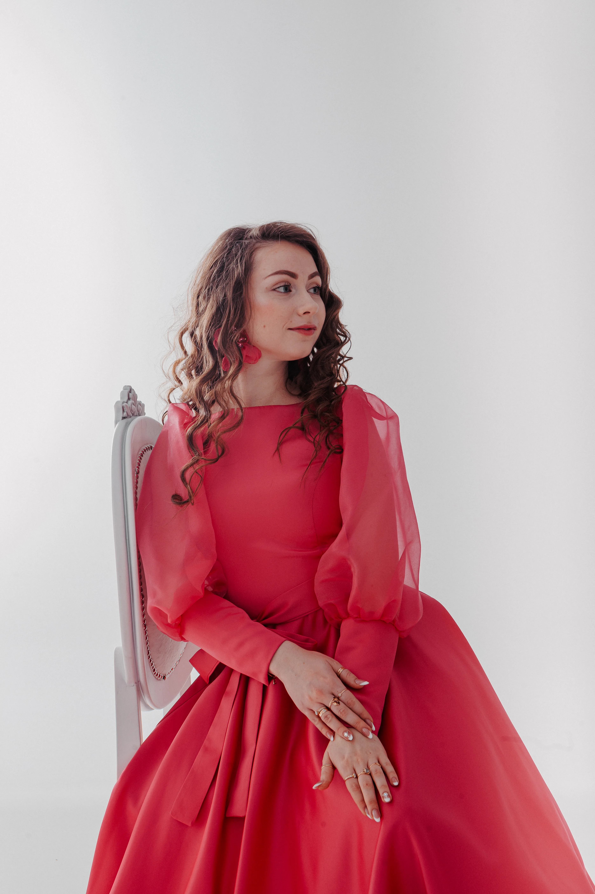

Фундаментальная академическая школа и современные техники для тех, кто хочет петь свободно, красиво и профессионально.
Записаться на обучение →Профессиональная постановка дыхания, точное звукоизвлечение и снятие голосовых зажимов.
Интеграция классической школы с современными требованиями эстрадно-концертной сцены.
Работа над художественной интерпретацией репертуара и вашей уверенностью перед публикой.
Обучение у практикующей солистки и лауреата международных конкурсов вокального искусства.

Я — профессиональная певица и преподаватель профильного музыкального колледжа. Мой подход строится на строгой академической базе, которую мы адаптируем под ваши цели. Моя миссия — помочь вам обрести техническую свободу голоса, раскрыть свой потенциал и уверенно звучать в любой музыке.
Екатерина Заремба — биография и регалии ⚜ →Здесь начинается ваш путь к большой сцене или уверенному пению для себя. Прикоснитесь к клавишам, почувствуйте музыку и сделайте первый шаг к своему новому голосу.
Действующая солистка, преподаватель профильной академии музыки, эксперт федеральных проектов.
Путь, неразрывно связанный с академической средой и сценическим мастерством.

«Педагогика для меня — это источник вдохновения, а непрерывная сценическая практика — обязательное условие профессионального тонуса.»
Послушайте девять нот и повторите их голосом. На графике сразу видно, где вы попали в ноту, а где ушли в сторону.
—
Звук не записывается и не уходит с вашего устройства: анализ идёт прямо в браузере
Рояль: Salamander Grand Piano, Alexander Holm, CC BY 3.0
Екатерина Заремба · частная вокальная школа
раскройте свой потенциал
Оставьте контактные данные и расскажите немного о вашем опыте. Мы свяжемся с вами, чтобы обсудить цели и подобрать время для первого занятия.
Ваша заявка успешно отправлена. В ближайшее время мы напишем вам, чтобы договориться о деталях первого урока.
«Голос — это не просто звук. Это душа, которая звучит.»— Екатерина Заремба